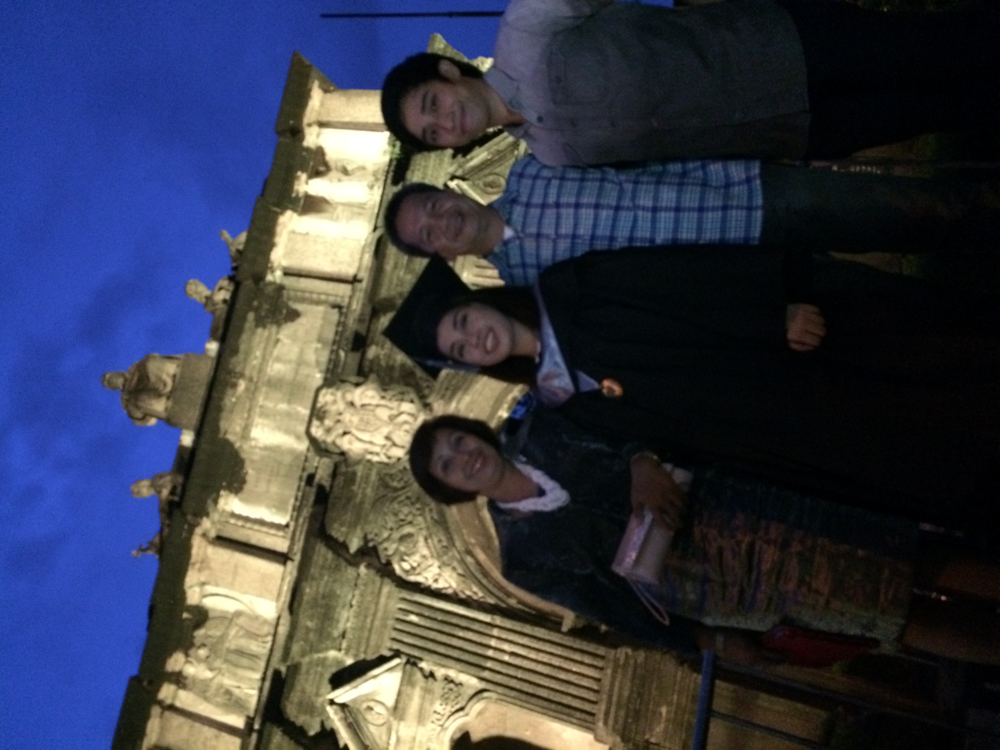
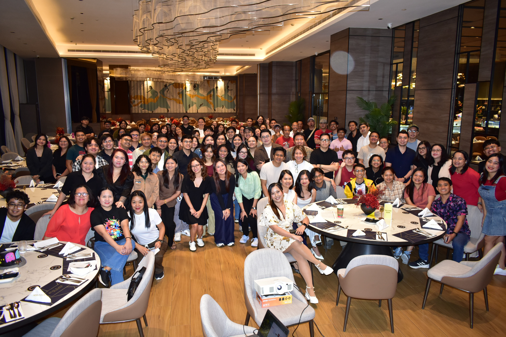

University of Santo Tomas
Bachelor of Science in Chemical Engineering

I am a sustainability consultant and a computer science student who is passionate about learning how technology can help solve real-world problems. Through my work and studies, I enjoy exploring digital tools, data, and new technologies that support better decision-making and sustainable solutions.
I am always open to learning new skills, working on interesting projects, and connecting with people who share similar interests in technology, sustainability, and innovation.
Bachelor of Science in Chemical Engineering

Senior Consultant - SME
ESG & Impact Assessment

Diploma in Computer Science